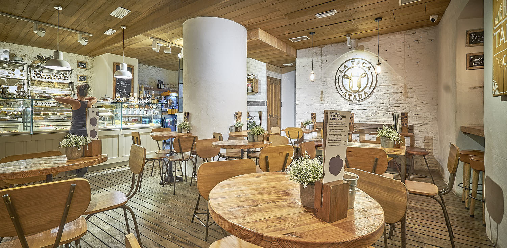

Cafes

Our commitment to you is that we source our coffee beans from the finest
estates and plantations from around the world. Our team visits these plantations to assess
and determine the quality of coffee before it makes it to our shortlist. Which is why we have
a really short list, because to us, only the best matter. We also ensure the farms we work
with are free from slave labour and any other malpractice and are ecologically responsible
and follow ethical practices.
1st and Pike Seattle
Pike Place Market, downtown Seattle, Washington, United States
Metro Market, Milwaukee
1123 N Van Buren St, Milwaukee, WI 53202, United States
Williamsport, Pennsylvania
1 COLLEGE AVE
WILLIAMSPORT PA 17701-5799
UNITED STATES OF AMERICA